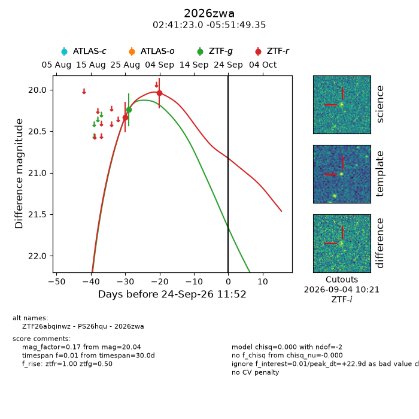
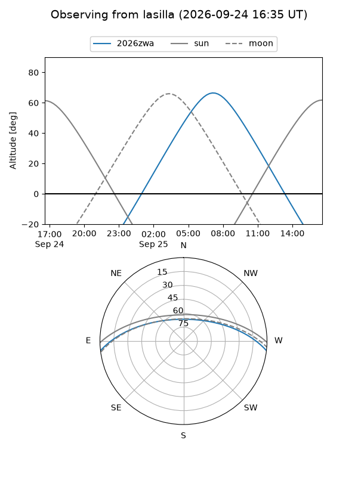
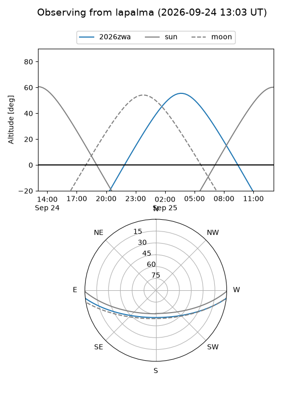
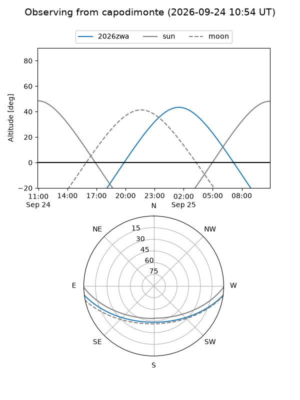
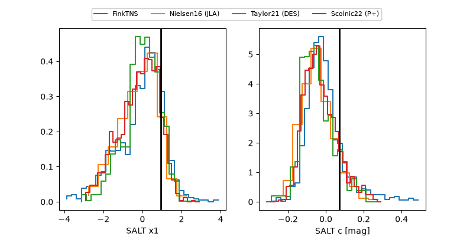

2026zwa
Target 2026zwa at 2026-09-24 11:54
Aliases and brokers:
FINK-ZTF: ztf.fink-portal.org/ZTF26abqinwz
Lasair-ZTF: lasair-ztf.lsst.ac.uk/objects/ZTF26abqinwz
ALeRCE-ZTF: alerce.online/object/ZTF26abqinwz
YSE-PZ: ziggy.ucolick.org/yse/transient_detail/2026zwa
TNS name: wis-tns.org/object/2026zwa
Direct TNS query: direct search
alt names
ZTF26abqinwz (ztf,fink_ztf)
2026zwa (tns,yse)
PS26hqu (panstarrs)
Coordinates:
equatorial (ra, dec) = 40.3459,-5.86371
equatorial (HMS+DMS) = 02:41:23.03,-05:51:49.35
galactic (l, b) = (178.7787,-56.30263)
Flags:
TNS type: nan
peak dt: +22.9
Photometry:
last ztfg=20.24, ztfr=20.04
1 ztfg, 2 ztfr detections
Lightcurve

Visibility



Additional plots
